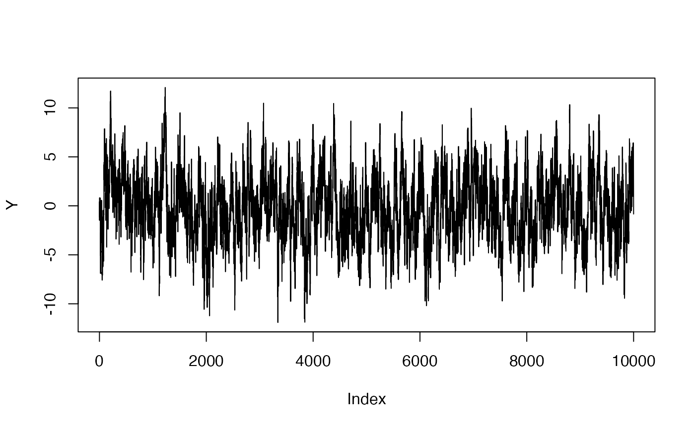

This vignette and all its examples assume you are familiar with the Matrix package. If you are not, perhaps you should be! It provides an organised and optimised set of methods for dealing with both dense and sparse matrices.
Suppose the \(n \times n\) matrix \(W\) is given by \[ W = A^{-1} + UB^{-1}V, \] where \(A\), \(U\), \(B\) and \(V\) are \(n \times n\), \(n \times p\), \(p \times p\) and \(p \times n\) matrices, respectively. Then \[ W^{-1} = A - AUO^{-1}VA, \] where \(O = B + VAU\) (a \(p \times p\) matrix), and \[ |W| = |O||A|^{-1}|B|^{-1}. \] These two relationships are often called the Woodbury matrix identity and the matrix determinant lemma, respectively. When \(A\) and \(B\) are both very sparse, or \(A\) is sparse (or even diagonal) and \(p\) is much smaller than \(n\), manipulating the matrices via these relationships rather than forming \(W\) directly can lead to massive computational savings. A symmetric special case is given by \[ W = A^{-1} + XB^{-1}X', \] where \(A\) and \(B\) must now be symmetric, and \(X\) is an \(n \times p\) matrix.
This package provides a class, WoodburyMatrix, to help in using these identities. WoodburyMatrix is a subclass the Matrix::Matrix class, and has two subtypes, GWoodburyMatrix for general matrices, and SWoodburyMatrix for symmetric matrices. A WoodburyMatrix can be formed by providing the matrices \(A\) and \(B\) (with \(U\) and \(V\) defaulting to identity matrices) to the WoodburyMatrix(...) function:
library(Matrix) library(WoodburyMatrix) set.seed(20200721) A1 <- rsparsematrix(500, 500, 0.05) B1 <- rsparsematrix(500, 500, 0.05) W1 <- WoodburyMatrix(A1, B1)
The matrices A, B, U and V are cast to Matrix::Matrix, so they can be dense or sparse, diagonal, triagonal, or any of the many subtypes available in the Matrix package. The symmetric form can be used with symmetric = TRUE, with the new restriction that A and B must be symmetric:
A2 <- crossprod(rsparsematrix(500, 500, 0.05)) B2 <- crossprod(rsparsematrix(500, 500, 0.05)) W2 <- WoodburyMatrix(A2, B2, symmetric = TRUE)
Some attempt is also made at automatic symmetric detection (see the WoodburyMatrix function documentation), but it is always best to explicitly provide symmetric = TRUE if you know the matrices are symmetric.
The following methods are defined for all WoodburyMatrix objects:
instantiate(W): forms the implicitly defined matrix W. This is usually not a good idea, because the matrix can be very large and this operation very slow;t(W): transpose of the matrix, returning another WoodburyMatrix;solve(W): returns the inverse of W - not recommended in general because this will usually be dense;solve(W, b): solves the system Wx = b for x; can be much faster than doing this directly for large, sparse \(A\) and \(B\);determinant(W): returns the log determinant of W, again much faster than a direct method;W %*% x: the matrix product of W and x, where x can be any object for which solve is defined for submatrices A and B (most typically, a numeric vector);Matrix::Matrix also work, including dim, dimnames, nrow, ncol, crossprod, and tcrossprod.SWoodburyMatrix objects additionally have the following methods:
mahalanobis(x, center, cov): where cov is a SWoodburyMatrix; calculate the Mahalanobis distance;dwnorm(x, mean, covariance, log): calculates the (log-) density of a multivariate normal distribution with an SWoodburyMatrix object as covariance;rwnorm(n, mean, covariance): draws samples from a multivariate normal distribution with an SWoodburyMatrix object as covariance.A very common example in which this technique applies is Bayesian linear regression, when \[ \begin{aligned} (Y \mid \beta) & \sim N(X\beta, \sigma^2 I_n), \\ \beta & \sim N(\mu_\beta, Q^{-1}_\beta), \end{aligned} \] where \(Y\) is \(n \times 1\), \(X\) is \(n \times p\) matrix of covariates, and \(\beta\) is a \(p \times 1\) vector of regression coefficients. Integrating out \(\beta\) yields \[ \begin{aligned} Y & \sim N(X\mu_\beta, \Sigma_y), \\ \Sigma_Y & = \sigma^2 I_n + X Q^{-1}_\beta X' \end{aligned} \] with density \[ p(Y) = (2\pi)^{-n/2} |\Sigma_Y|^{-1/2} \exp\left\{ -\frac{1}{2} (Y - X\mu_\beta)' \Sigma^{-1}_Y (Y - X\mu_\beta) \right\}. \] For most \(X\) and \(Q_\beta\), the covariance \(\Sigma_Y\) is very dense, so for large \(n\) using this expression is infeasible. But the expression for \(\Sigma_Y\) can be mapped to the Woodbury matrix identity via \(A \to \sigma^{-2} I_n\), \(B \to Q_\beta\) and \(X \to X\), which facilitates computation of the density by requiring inversion only of the \(p \times p\) matrix \(O\).
Suppose \(n = 1000\), \(p = 20\), \(\sigma^2 = 1\), \(Q_\beta = I_p\), \(\mu_\beta = \mathbf{0}\) and \(X\) is composed of random entries. We can code this example and form a WoodburyMatrix for \(\Sigma_Y\) using:
n <- 2000 p <- 20 sigma_squared <- 1 X <- matrix(rnorm(n * p), nrow = n) Q_beta <- Diagonal(p) mu_beta <- rep(0, p) Sigma_Y <- WoodburyMatrix( Diagonal(n, 1 / sigma_squared), Q_beta, X = X )
Now compare the size of Sigma_Y versus directly forming this matrix (which can be done using the instantiate(.) function):
Sigma_Y_direct <- instantiate(Sigma_Y) object.size(Sigma_Y) #> 329952 bytes object.size(instantiate(Sigma_Y)) #> 32001400 bytes
The WoodburyMatrix object is much smaller. You can draw samples from this distribution using the function rwnorm, and calculate its log density using dwnorm:
Y <- rwnorm(1, X %*% mu_beta, Sigma_Y) system.time(print(dwnorm(Y, X %*% mu_beta, Sigma_Y, log = TRUE))) #> [1] -2902.92 #> user system elapsed #> 0.011 0.000 0.020
Compare the time this takes to the direct version:
Y_m <- Y - X %*% mu_beta system.time(print(as.numeric( - 0.5 * n * log(2 * pi) - 0.5 * determinant(Sigma_Y_direct)$modulus - 0.5 * crossprod(Y_m, solve(Sigma_Y_direct, Y_m)) ))) #> [1] -2902.92 #> user system elapsed #> 0.705 0.088 0.469
For large \(n\) the direct version would be completely infeasible.
A related example, also from statistics, involves a sum of two other vectors having multivariate normal distributions, each with sparse precision matrices: \[
\begin{aligned}
Y & = Y_1 + Y_2, \\
Y_1 & \sim N(0, Q_1^{-1}), \\
Y_2 & \sim N(0, Q_2^{-1}),
\end{aligned}
\] where \(Y\), \(Y_1\) and \(Y_2\) are \(n \times 1\), and \(Q_1\) and \(Q_2\) are sparse \(n \times n\) positive-definite matrices. Marginally, the distribution of \(Y\) is \[
Y \sim N(0, Q_1^{-1} + Q_2^{-1}),
\] which has density \[
p(Y) \propto |Q_1^{-1} + Q_2^{-1}|^{-1 / 2} \exp\left\{ Y' (Q_1^{-1} + Q_2^{-1})^{-1}) Y \right\}.
\] Unfortunately, the matrix \(Q_1^{-1} + Q_2^{-1}\) is unlikely to be sparse, so evaluating the density directly is not feasible for large \(n\). By mapping \(A \to Q_1\), \(B \to Q_2\), and \(X \to I_n\), the problem can be solved with a WoodburyMatrix.
A very simple example that fits in this framework occurs in time series analysis. Suppose that \(Y_1 = (Y_{1, 1}, \ldots, Y_{1, n})'\) is an AR(1) process in time, and \(Y_2\) is i.i.d. normal with variance \(\sigma^2\). That is, \(Y_{1, t} = \rho Y_{1, t - 1} + \epsilon_t\) with \(\rho \in (-1, 1)\) and \(\epsilon_t \sim N(0, 1)\). It can be shown that the precision matrix for \(Y_1\) is given by the tridiagonal matrix \[ Q_1 = \begin{pmatrix} 1 & -\rho & & & & \\ -\rho & 1 + \rho^2 & -\rho & & & \\ & -\rho & 1 + \rho^2 & -\rho & & \\ & & \ddots & \ddots & \ddots & \\ & & & -\rho & 1 + \rho^2 & -\rho \\ & & & & -\rho & 1 \end{pmatrix}, \] which is very sparse for large \(n\). Of course, the precision matrix for \(Y_2\), \(Q_2 = \sigma^{-2} I_n\), is also sparse. For \(n = 10000\), \(\rho = 0.95\), \(\sigma^2 = 1\) this can be coded as
n <- 10000 rho <- 0.95 Q_1 <- bandSparse( n, diagonals = list( c(1, rep(1 + rho ^ 2, n - 2), 1), rep(-rho, n - 1) ), k = c(0, 1), symmetric = TRUE ) Q_2 <- Diagonal(n) Sigma_Y <- WoodburyMatrix(Q_1, Q_2)
Incidentally, the automatic symmetry detection worked here, so we didn’t have to specify symmetric = TRUE:
print(isSymmetric(Sigma_Y)) #> [1] TRUE
We can draw a sample of \(Y\), and plot it:

And finally we can calculate the log density of the sample very efficiently:
system.time(print(dwnorm(Y, covariance = Sigma_Y, log = TRUE))) #> [1] -18822.09 #> user system elapsed #> 0.022 0.001 0.023
A more general form allows for multiple \(B\) matrices: \[
W = A^{-1} + \sum_{i = 1}^k U_i B_i^{-1} V_i,
\] and analogously for the symmetric form. You can use this form by providing a list of matrices as the B (or U, V or X) arguments. Internally, this is implemented by converting to the standard form by letting B = bdiag(...the B matrices...), U = cbind(..the U matrices...), and so on. Here is an example involving two B matrices of varying sizes:
n <- 500 p1 <- 50 p2 <- 10 A <- rsparsematrix(n, n, 0.5) B1 <- rsparsematrix(p1, p1, 0.9) B2 <- rsparsematrix(p2, p2, 0.9) U1 <- rsparsematrix(n, p1, 0.9) U2 <- rsparsematrix(n, p2, 0.9) W <- WoodburyMatrix(A, list(B1, B2), U = list(U1, U2), V = list(t(U1), t(U2))) b <- rnorm(n) str(solve(W, b)) #> Formal class 'dgeMatrix' [package "Matrix"] with 4 slots #> ..@ x : num [1:500] 99.8 -103.1 -129.5 137.7 98.5 ... #> ..@ Dim : int [1:2] 500 1 #> ..@ Dimnames:List of 2 #> .. ..$ : NULL #> .. ..$ : NULL #> ..@ factors : list()
For both general and symmetric matrices, heavy implicit use is made of the fact that the Matrix package caches matrix factorisations. This means that, generally speaking, the heavy lifting of decomposing the matrices is done on the first operation like solve or determinant, and subsequent calls are much faster.
Max A. Woodbury, Inverting modified matrices, Memorandum Rept. 42, Statistical Research Group, Princeton University, Princeton, NJ, 1950, 4pp
See also the Wikipedia pages for the Woodbury matrix identity and the Matrix determinant lemma.